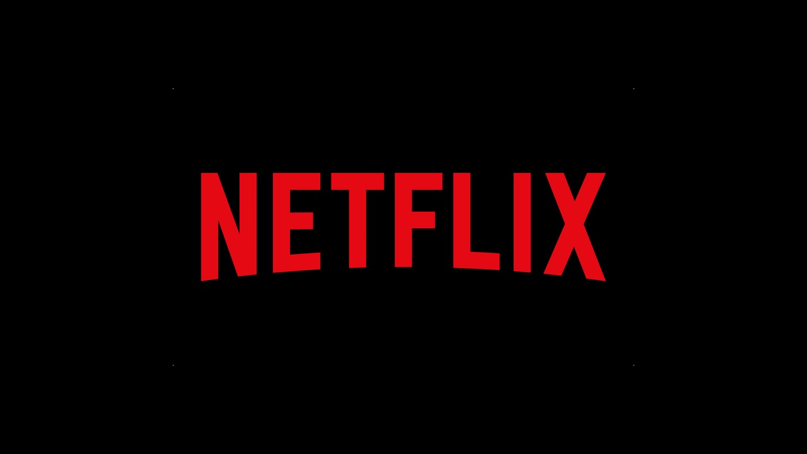
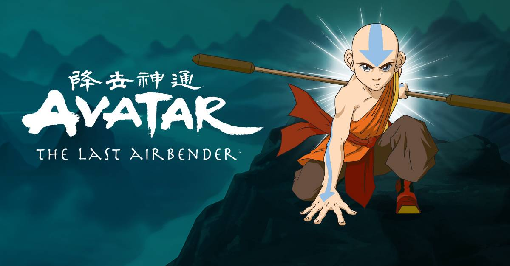

Current Show: (Avatar: The Last Airbender
)

Season 1: 20 Episodes
- The Boy in the Iceberg
- The Boy in the Iceberg: (Link)
- The Avatar Returns: (Link)
- The Southern Air Temple: target="_blank" href="https://www.netflix.com/watch/70116063?trackId=200257859">(Link)
- The Warriors of Kyoshi
- The King of Omashu
- Imprisoned
- Winter Solstice: Part 1: The Spirit World
- Winter Solstice: Part 2: Avatar Roku
- The Waterbending Scroll
- Jet
- The Great Divide
- The Storm
- The Blue Spirit
- The Fortune-Teller
- Bato of the Water Tribe
- The Deserter
- The Northern Air Temple
- The Waterbending Master
- The Siege of the North: Part 1
- The Siege of the North: Part 2
Season 2: 18 Episodes
- The Avatar State
- The Cave of Two Lovers
- Return to Omashu
- The Swamp
- Avatar Day
- The Blind Bandit
- Zuko Alone
- The Chase
- Bitter Work
- The Library
- The Desert
- The Secret of the Fire Nation
- City of Walls and Secrets
- Tales of Ba Sing Se
- Appa's Lost Days
- Lake Laogai
- The Earth King
- The Guru/the Crossroads of Destiny
Season 3: 16 Episodes
- The Awakening
- The Headband
- The Painted Lady
- Sokka's Master
- The Beach
- The Avatar and the Firelord
- The Runaway
- The Puppetmaster
- Nightmares and Daydreams
- Day of the Black Sun
- The Western Air Temple
- The Firebending Master
- The Boiling Rock
- The Southern Raiders
- The Emperor Island Players
- Sozin's Comet